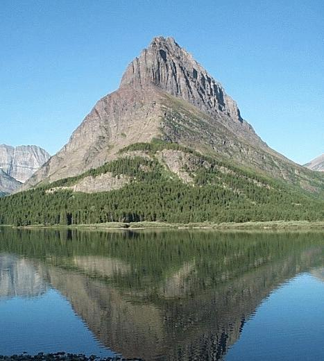
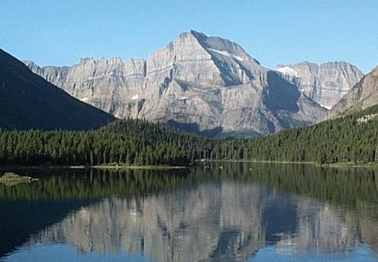
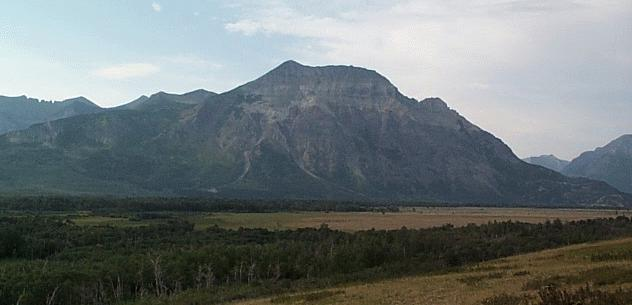
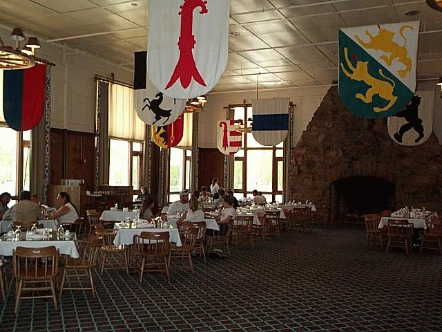
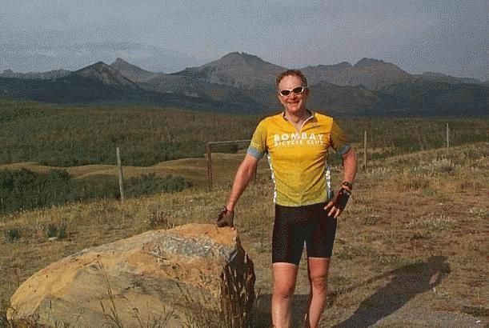

|
Many Glacier & Waterton |
||
| The Many Glacier area of Glacier National Park is in the northeast corner of the U.S. side of the park. Waterton Lake National Park is north of there in Canada. These are truly special places that I can never forget. | ||
 |
 The pictures to the left and above were taken from the deck of the Many Glacier Hotel. Using field glasses, people on this deck were viewing bears grazing on the hillside just north of the hotel. The picture below is the hotel dinning room. The food served there is well prepared but the lack of variety would leave you wanting if you stayed longer than a few days. |
|
 Like the Many Glacier area, Waterton Village is in a valley surrounded by mountains. The pictures above and below show some of the mountains that surround the Waterton valley. |
 |
|
 |
A popular thing to do while in Waterton Village is to take the Miss Waterton across Waterton Lake to the trail head for the hike to Crypt Lake. Crypt Lake is a high glacier lake that sits in a bowl of pure rock. The trail takes you through a narrow rock tunnel and along a rock wall. It is a beautiful hike that starts in the woods and climbs above the tree line. The boat departs Waterton Village at 9 a.m. and picks you up at 5:30 p.m. You can also leave at 10 a.m. or come back at 4 p.m., if you don't spend too much time swimming in the cold but not freezing water of Crypt Lake. | |
| I enjoyed my day at Many
Glacier. There I did some reading in the hotel and kayaking on
Swiftcurrent Lake. At Waterton Village I did the Crypt Lake hike
with Steve who hails from Cleveland or Michigan depending his mood, I
think. We had a great time and I'm sure we will meet again. One of the features of Waterton Village is a grand hotel called the Prince of Wales. This hotel sits high on a hill above the village. Steve and I celebrated our day hiking there with a Traditional which is a local beer. Steve noted that although the hotel has a commanding view of the area, there is no porch or patio from which one could enjoy the view in comfort. This is in contrast to the more modest Many Glacier Hotel which seems to be focused on the surrounding grandeur. Glacier National Park in the U.S. and Waterton Lakes National Park in Canada are adjoining and cooperatively managed. One can take a boat ride to Glacier Park from Waterton Village and this is another one of the popular activities. After a short walk on U.S. soil, the participants return on the same boat. |
||
| The route from Many Glacier to Waterton Village includes crossing a pass on Chief Joseph Mountain Highway. This crossing and my travels in Canada are described in the following pages. | ||
{kind=link}
{kind=link}
{kind=link}
{kind=link}
{kind=link}